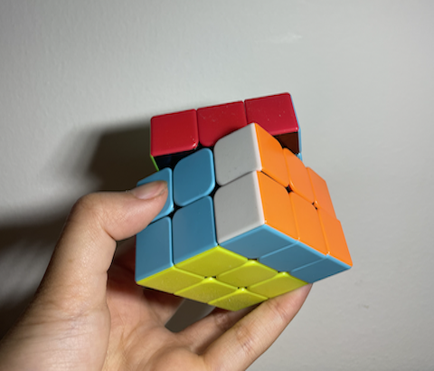
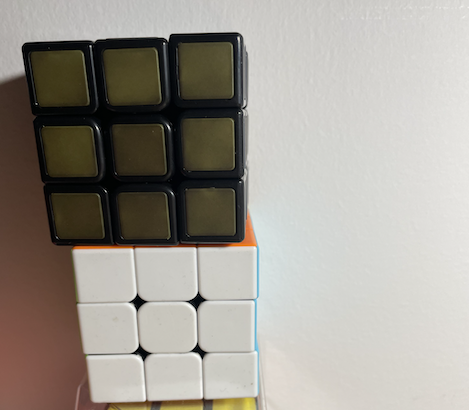
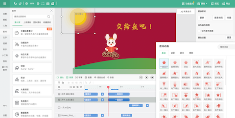
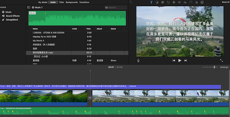
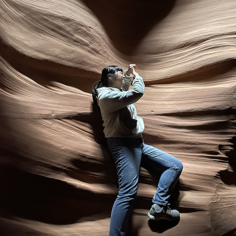
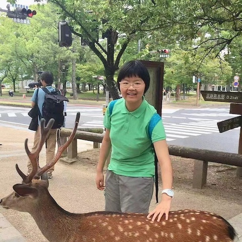

Hi! my name is
Rachel Yan
Source: Cup robotics headshot
{kind=link}
Introduction
I was born and raised in Shanghai, where in the childhood and school years over there, I developed strong interests in STEM, such as coding, website creation, and also physics. After coming to Cornell, I gradually explored my interest, and found my major: Electrical and computer engineering (will be shorten as ECE in the following contents).
ECE is a very interdisciplinary subject, and really allows me to explore both of the hardware and the software side of technology development, which is exactly what I love to do.
I found my passion in leaerning how to utilize my knowledge and skills to make life easier for everyone and the society.
Currently, as a sophmore student, I am still exploring my career, and hope that with my skills and passion, I would be able to find a career that I love one day.
Hobbies and Interests
Besides studying as an engineer, there are also plenty of other things that I enjoy doing, such as travelling, solving rubik's cubes, making videos, etc.
I am a big fan of rubik's cube and have several of them in my dorm, and a lot more at home. I love solving them, as I think they gave me a kind of inspiration of challenging myself and looking at things in a different way. Not only am I interested in solving it, I am also interested in solving them in different shapes and how to solve them really fast!
 In addition, I really enjoy video making, which I beleive is a good way of spreading ideas and contents. I used to make a few videos for my parents, and then I gradually came to make videos for my intersts, such as anime and music videos. I am still learning how to use more professional ways to edit these videos.
 I am also a person who really enjoyed travelling. I have been to several different countries, such as Australia, Japan, Canada, etc. I have really seen a lot of different views and I do think that travelling could help me see more part of the world, and broden my horizon.
 